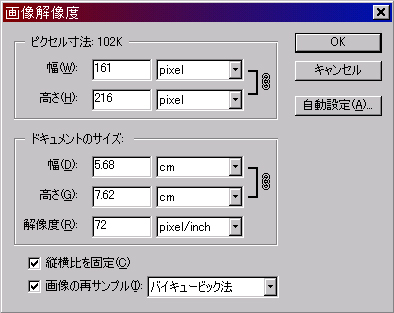
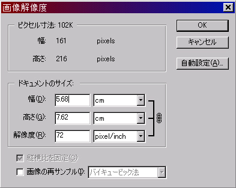
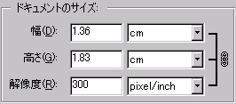
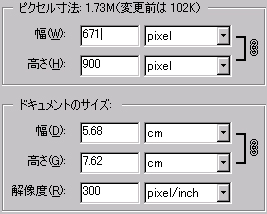
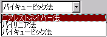

section 02
それでは実際にPhotoshopで解像度を変更してみましょう。
解像度を変更するときは、【イメージ】タブの中から【画像解像度】を選んでください。
すると下図のようなウィンドウが出てきますね?
|

|
上段にある【ピクセル寸法】とは、その画像を構成しているマス目（ピクセル）の数を表します。
中断にある【ドキュメントのサイズ】とは、実際に紙に印刷したときのデータを表します。
|
|

|
ここでまず、【画像の再サンプル】のチェックをはずしてください。
すると上段の【ピクセル寸法】が変更できなくなります。
|
|

|
次に【解像度】の項目を変化してみましょう。
すると同時に【幅】と【高さ】の値も変わります。
これは、その解像度（dpi）にしたときにプリントできるサイズになるように、ソフトが自動的に変更してくれるからです。
この例の場合は、ピクセルの数をロックしたまま【解像度】を大きく上げたため、画像の密度が上がり、より精密な印刷が可能になります。しかし印刷したときの画像のサイズはかなり小さくなってしまいます。
|
|

|
では次に、【画像の再サンプル】のチェックを入れたまま【解像度】を変更しましょう。
すると今度は【ドキュメントのサイズ】は変わりませんが、【ピクセル寸法】の【幅】と【高さ】の値が変化しました。
【画像の再サンプル】にチェックを入れて【解像度】を変更すると、ソフトが自動的にピクセルを追加したり削除したりするからです。
こうすることで、印刷後のサイズと編集中のサイズを同時に変更することができます。
この例の場合は、【解像度】をあげて密度を増やしつつ画像のピクセル数も上げるため、より細部まで編集をすることが可能となります。しかしピクセル数が増えたためデータ量が多くなり、CPUにかける負担も上昇します。
|
【ピクセル寸法】の値を変化させるなどして画像のピクセル数を変化させると、当然画質も変化します。
この画質の変化はソフトが自動的に行いますが、その変化の方式は３通りあります。
【画像の再サンプル】の右にあるスクロールバーを開いてみましょう。
すると下図のように３つの方式が表示されます。
|

|
【バイキュービック法】
Photoshopの初期設定で選択されている方式。３つの方式のなかではいちばん劣化が目立ちませんが、処理に時間がかかります。
【バイリニア法】
バイキュービック法より若干計算の時間が短縮されますが、その分画質は低下します。
【ニアストレイバー法】
もっとも高速で処理される画像保管形式です。ドットが粗くなり、画質は下がります。逆にドットをそのまま拡大したい場合には、この方法が適しています。（非常に小さい画像をそのまま拡大したいとき）
|
解像度は理解したつもりになっても、実際に使用すると混乱することがあります。実際に印刷などを行ってみて、その性質を理解すると良いでしょう。
section1に戻る